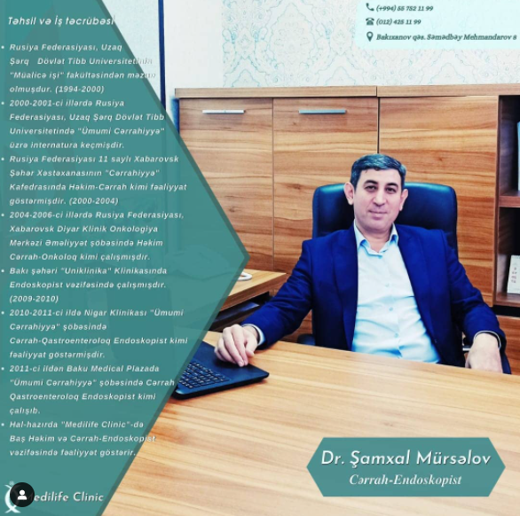
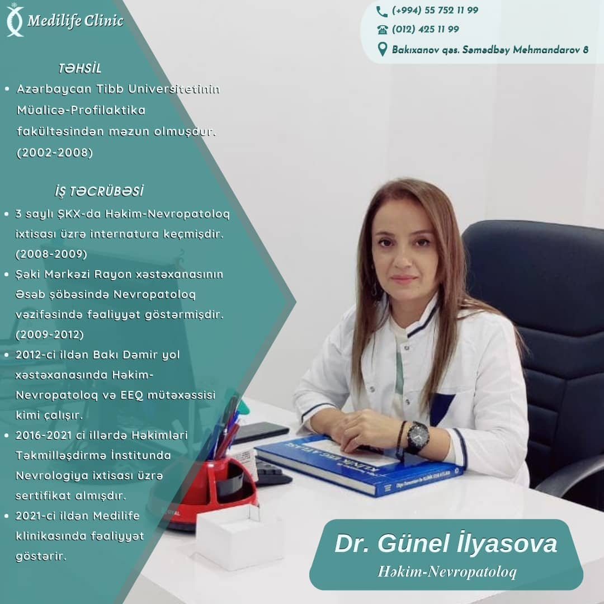
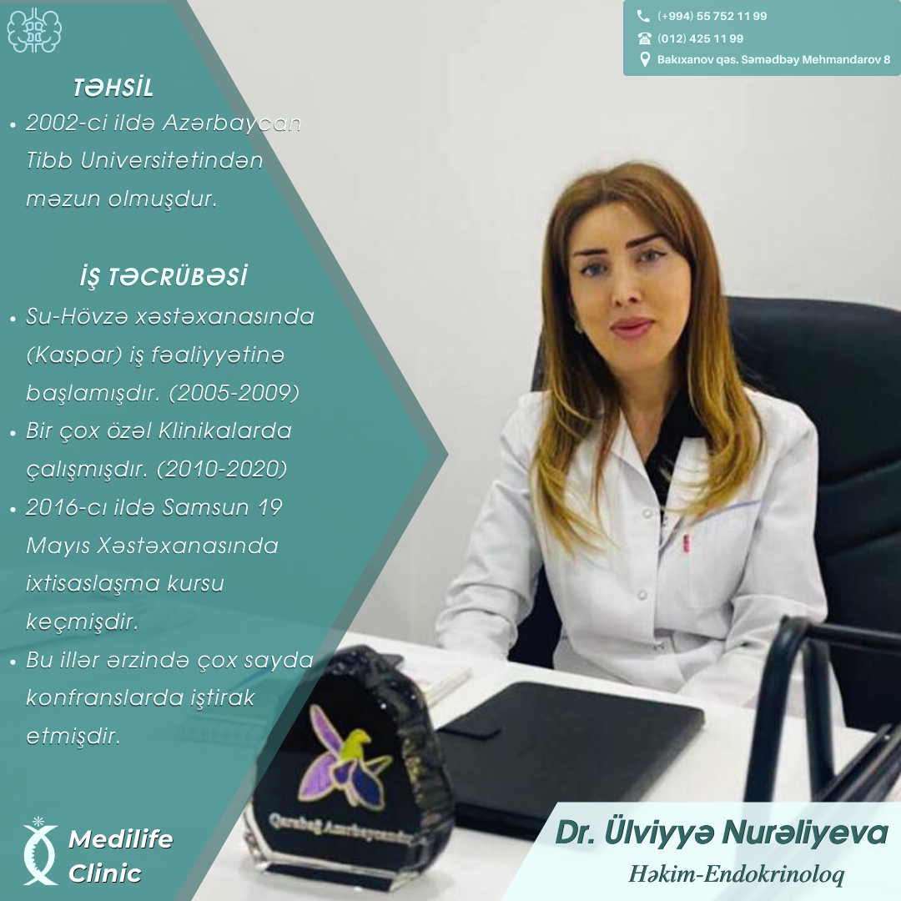
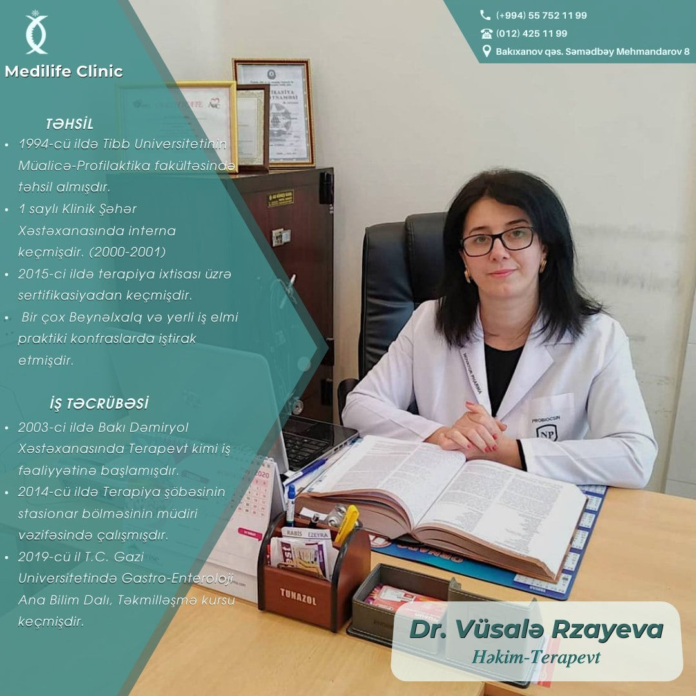
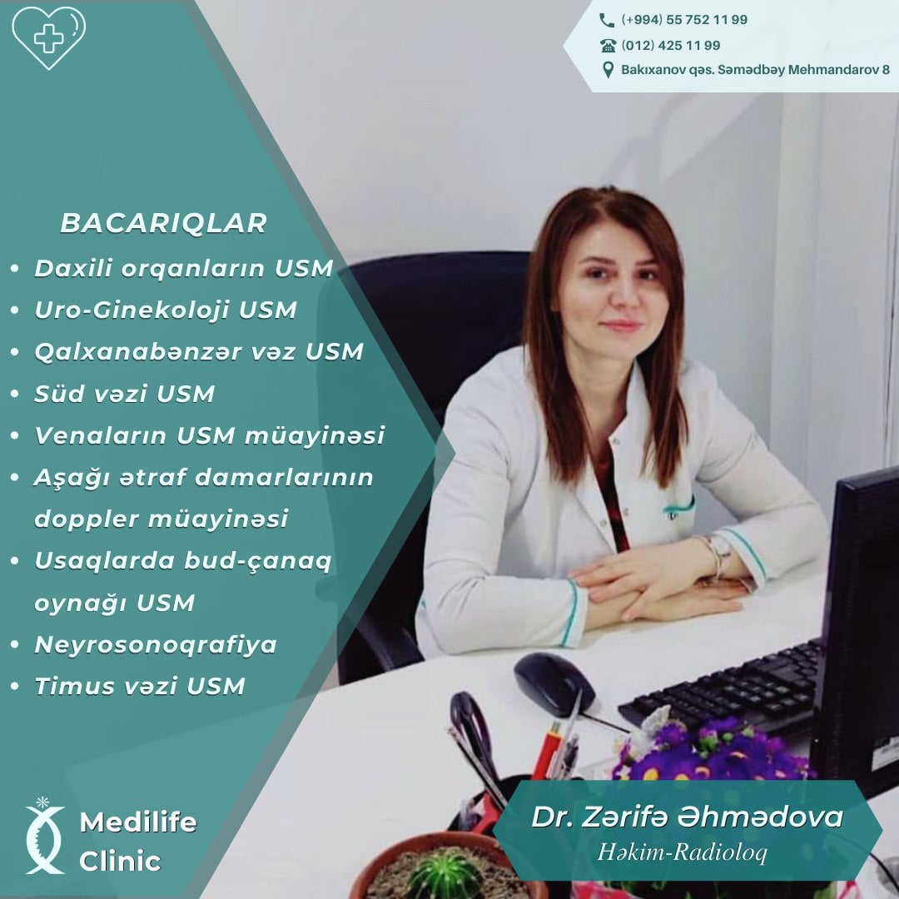
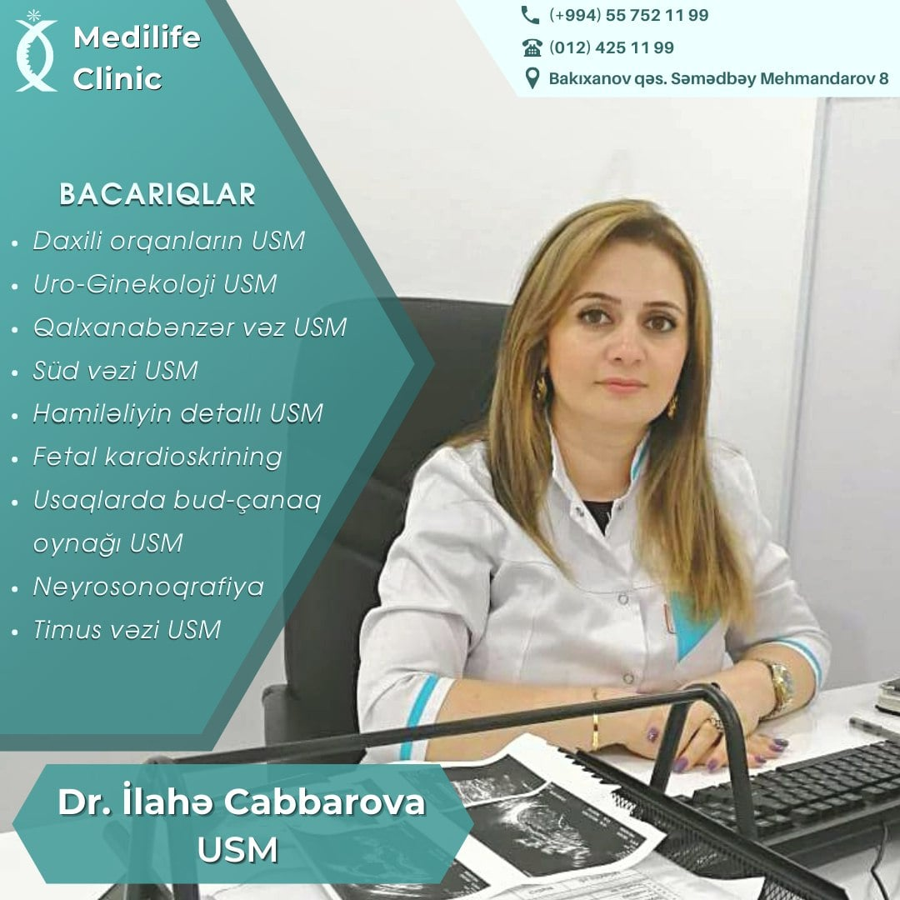
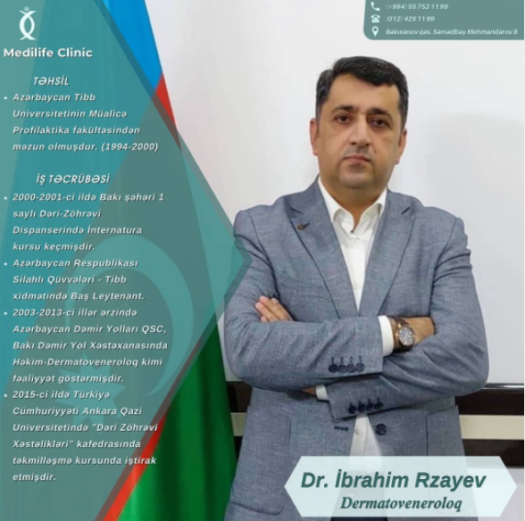
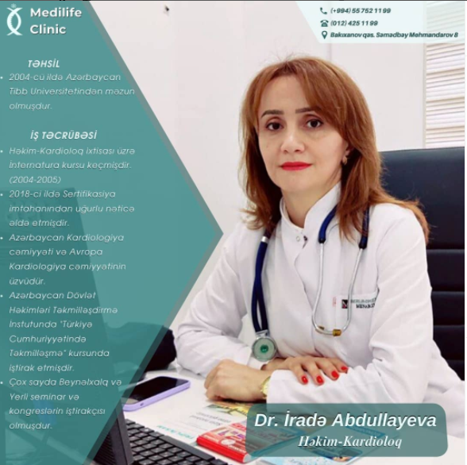
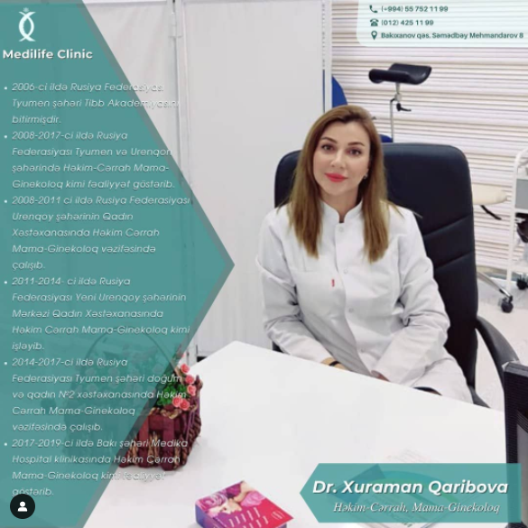

Baş Həkim

👨🏻⚕️ Klinikamızın təcrübəli Baş Həkimi - Cərrah - Endoskopist Şamxal Mürsəlov.
📚Təhsili:
🔸1994-2000-ci illərdə
Rusiya Federasiyasında Uzaq Şərq Dövlət Tibb Universitetində Müalicə işi fakultəsi bitirib.
🔸2000-2001-ci illərdə Rusiya Federasiyasında Uzaq Şərq Dövlət Tibb Universitetində Ümumi cərrahiyyə üzrə
internatura keçib.
▫️2004-2005-ci illərdə Rusiya Federasiyası Qersen adına Moskva Onkoloji Elmi Tədqiqat İnstitutunda Onkologiya üzrə təkminləşmə kursu keçib.
▫️2005-ci ildə Rusiya Federasiyası Səhiyyə İşçilərinin Təkminlləşdirmə İnstitutunda Endoskopiya üzrə ilkin ixtisaslaşma kursundan keçib.
Həmçinin əlavə olaraq çox sayda kurslarda iştirak etmişdir.
İş təcrübəsi:
🔸 2000-2004-cü illərdə Rusiya Federasiyası 11 saylı Xabarovsk Şəhər Xəstəxanası Cərrahiyyə Kafedrasında həkim cərrah kimi fəaliyyat göstərib.
🔸2004-2006-ci illərdə Rusiya Federasiyası Xabarovsk Diyar Klinik Onkologiya Mərkəzi Əməliyyət şöbəsində həkim cərrah-onkoloq kimi çalışıb.
🔸2006-2008-ci illərdə Rusiya Federasiyası Xabarovsk Klinika Diaqnostika Mərkəzi Cərrahiyyə və Endoskopiya şöbəsində həkim cərrah. Qastroenteroloq-Endoskopist kimi işləyib.
🔸2009-2010-cu illərdə Bakı şəhəri Uniklinika Klinikasında Endoskopist kimi çalışıb.
🔸2010-2011-ci ildə Bakı şəhəri Nigar klinikası Ümumi cərrahiyyə şöbəsində cərrah qastroenteroloq- Endoskopist kimi çalışıb.
🔸2011-ci ildən Baku Medical Plazada Ümumi cərrahiyyə şöbəsində cərrah-qastroenteroloq, Endoskopist kimi çalışıb.
🔸2016-2019-ci illərdə Medica Hospitalda Ümumi cərrahiyyə şöbəsində cərrah-qastroenteroloq, Endoskopist və baş həkim vəzifəsində çalışıb.
Hazırda Medilife klinikasında fəaliyyət göstərir.✔️
Sağlamlığınız bizə əmanət 🩺
Şamxal həkimin qəbuluna yazılmaq üçün⤵️
_________________________
📞 (+994) 55 752 11 99
📞 (+994) 70 752 11 99
☎️ (012) 425 11 99
📍 Bakı ş., Bakıxanov q., Səmədbəy Mehmandarov 8
Həkimlər

👩🏻⚕️Klinikamızın təcrübəli Dr. Həkim- Nevropatoloq İlyasova Günel
📚 Təhsili:
🔸️2002-2008 ci illərdə Azərbaycan Tibb Universiteti Müalicə-profilaktika fakültəsində təhsil almışdır.
🔸️2008-2009 cu ildə 3 saylı ŞKX-da həkim nevropatoloq ixtisası üzrə internatura keçmişdir.
🔸️2016-2021 ci illərdə Həkimləri Təkmilləşdirmə institunda Nevrologiya ixtisası üzrə sertifikat almışdır.
🔸️2018-ci ildə Medical Park xəstəxanalar qrupu tərəfindən, 2019 cu ildə Təbriz Valiasir Hospitalında nevrologiya üzrə sertifikat almışdır.
Müxtəlif Beynəlxalq və yerli konfranslarda iştirak etmişdir
📌İş təcrübəsi:
🔸️2009-2012 ci illərdə Şəki Mərkəzi Rayon xəstəxanasının Əsəb şöbəsində nevropatoloq kimi fəaliyyət göstərib.
🔸️2012-ci ildən Bakı Dəmir yol xəstəxanasında həkim nevropatoloq və EEQ mütəxəssisi kimi fəaliyyət göstərir.
🔸️2021-ci ildən Medilife klinikasında fəaliyyət göstərir.
Müxtəlif Beynəlxalq və yerli konfranslarda iştirak etmişdir.
▫️Məşğul olduğu sahələr:
EEQ (elektroensi faloqramma)
Exo EO (Exoelektroensı faloqramma)
Nevrozlar
Sağlamlığınız bizə əmanət🩺

👩🏻⚕️Klinikamızın təcrübəli həkim endokrinoloq Ülviyyə Nurəliyeva.
📚 Təhsili:
🔸2002-ci ildə Azərbaycan Tibb Universtetindən məzun olmuşdur.
🔸2016- cı ildə Samsun 19 Mayıs xəstəxanasında ixtisaslaşma kursu keçmişdir.
📌İş təcrübəsi:
🔸2005-2009-cu illərdə Su-Hövzə xəstəxanasında (Kaspar) iş fəaliyyətinə başlamışdır.
🔸2010-2020- ci ilə qədər müxtəlif özəl klinikalarda çalışmışdır.
🔸Bu illər ərzində çox sayda konfranslarda iştirak etmişdir.
Hazırda - "Medilife Clinic" klinikasında çalışır.✔️
Sağlamlığınız bizə əmanət🩺

👩🏼⚕️Klinikamızın təcrübəli həkim-terapevti Vüsalə Rzayeva.
📚 Təhsili:
🔸1994-ci ildə Tibb Universtetindin Müalicə-Prafilaktika fakultəsində təhsil almışdır..
🔸2000 - 2001 ci illərdə 1 saylı Klinik Şəhər Xəstəxanasında interna keçmişdir.
📌İş təcrübəsi:
🔸2003- cü ildə Bakı Dəmiryol Xəstəxanasında Terapevt kimi iş fəaliyyətinə başlamışdır.
🔸2014 - cü ildə Terapevt şöbəsinin Stasionar bölməsinin müdiri vəzifəsində çalışmışdır.
🔸Bu illər ərzində çox sayda konfranslarda iştirak etmişdir.
Hazırda - "Medilife Clinic" klinikasında çalışır.✔️
Sağlamlığınız bizə əmanət🩺

👩🏼⚕️Klinikamızın təcrübəli həkim-radioloqu Zərifə Əhmədova.
📚Təhsili:
🔸2002-2008-ci illərdə ATU-da müalicə işi fakultəsində təhsil alıb.
🧬İş təcrübəsi:
🔸2009-cu ildən 2017-ci ilə qədər – Sumqayıt TTYX-da- həkim-radioloq kimi fəaliyyət göstərib.
🔸Bu illər ərzində bir çox yerli və beynəlxalq konfranslarda iştirak edib. Bir çox özəl klinikalarda çalışıb.
Hazırda – ”Medilife Clinic” klinikasında çalışır.✔️
Sağlamlığınız bizə əmanət 🩺

👩🏼⚕️Klinikamızın təcrübəli USM həkimi İlahə Cabbarova.
📚Kurs və seminarlar:
🔸Həkimləri təkmilləşdirmə İnstitutu Şüa Diaqnostika (modul 5-8) № 0105684 2018.04.09 2018.05.04
🔸Azərbaycan Alman-Türk Tibbi
(Akreditasiya olunmuş Davamlı Tibbi Təhsil (34 kredit balı)) İntermediate səviyyəsində Ultrasəs müayinə ilə treyninqlər (Prof. Mark Gebel, Dr. Azər Fərəcovun rəhbərliyi ilə) Sertifikat 2018.04.28-30
🔸Azər-Türkmed Lazer Clinik Aşağı ətraf venalarının varikozunun US-diaqnostikası, master-klas Dr cərrah-fleboloq İvan Stepnov,(St Petersburg Pavlov State Medical University) - 15.11.2018 və s.
Hazırda – ”Medilife Clinic” klinikasında çalışır.✔️
Sağlamlığınız bizə əmanət 🩺

👨🏻⚕️ Klinikamızın təcrübəli həkim-dermatoloq Rzayev İbrahim
📚Təhsili:
🔸1994-2000-ci ildə Azərbaycan Tibb Universitetinin Müalicə profilaktika fakultəsindən məzun olmuşdur.
İş təcrübəsi:
🔸 2000-2001-ci ildə Bakı şəhəri 1 saylı Dəri-Zöhrəvi Dispanserində İnternatura kursu keçmişdir.
🔸️Azərbaycan Respublikası Silahlı Qüvvələri - Tibb xidmətində Baş Leytenant.
🔸2003-2013-ci illər ərzində Azərbaycan Dəmir Yolları QSC. Bakı Dəmir Yol Xəstəxanasında Həkim-Dermatoveneroloq kimi fəaliyyət göstərmişdir
Hazırda – ”Medilife Clinic” klinikasında çalışır.✔️
Sağlamlığınız bizə əmanət 🩺

👩🏼⚕️Klinikamızın təcrübəli həkim-kardioloq İradə Abdullayeva.
📚Təhsili:
🔸2004-cü ildə Azərbaycan Tibb Universitetindən məzun olmuşdur.
İş təcrübəsi:
🔸 2004-2005-ci illərdə Həkim-Radioloq ixtisası üzrə İnternatura kursu keçmişdir.
🔸2018-ci ildə Sertifikasiya imtahanından uğurlu nəticə əldə etmişdir.
🔸Azərbaycan Kardiologiya cəmiyyəti və Avropa Kardiologiya cəmiyyətinin üzvüdür.
🔸 Azərbaycan Dövlət Həkimləri Təkmilləşdirmə İnstutunda "Türkiyə Cumhuriyyətində təkmilləşmə " kursunda iştirak etmişdir.
📌Çox sayda Beynəlxalq və yerli seminar və kongreslərin iştirakçısı olmuşdur.
Hazırda – ”Medilife Clinic” klinikasında çalışır.✔️
Sağlamlığınız bizə əmanət 🩺

👩🏻⚕️Klinikamızın təcrübəli həkim-cərrah, mama-ginekoloq Xuraman Qəribova
📚 Təhsili:
🔸2006-2008 ci illərdə Rusiya Federasiyası Tyumen şəhərinin Dövlət Tibb Akademiyasında ordinaturanı bitirmişdir.
📌İş təcrübəsi:
🔸2008-2017-ci ildə Rusiya Federasiyası Tyumen və Urenqon şəhərində həkim cərrah mama ginekoloq kimi fəaliyyət göstərib.
🔸️2008-2011-ci illərdə Qadın məsləhətxanası və Mərkəzi xəstəxanada həkim-cərrah, mama ginekoloq kimi fəaliyyət göstərib.
🔸2011-2014 ci illərdə Qadın məsləhətxanası və Mərkəzi xəstəxanada həkim-cərrah, ginekoloq kimi fəaliyyət göstərib.
🔸2014-2017 ci illərdə Tyumen şəhəri Doğum Evi və Qadın məsləhətxanasında həkim-cərrah, mama ginekoloq kimi fəaliyyət göstərib.
🔸2017-2019-ci ildə Bakı şəhəri Medika Hospital klinikası həkim cərrah mama-ginekoloq kimi fəaliyyət göstərib.
📌 Hal-hazırda Bakı Medikal Plazada və Medilife klinikasında həkim cərrah mama-ginekoloq kimi fəaliyyət göstərir.
Sağlamlığınız bizə əmanət🩺